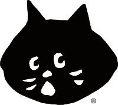

|  | REGRAS DO JOGO | TUTORIAL | CURIOSIDADES | SOBRE NÓS | PONTUAÇÕES |
|---|
Olá!!!
Somos a Iolanda Leal, José Medeiros e Rita Wang. 3 entusiastas alunos da licenciatura de Matemática Aplicada da Faculdade de Ciências da Universidade de Lisboa.
Apesar de completamente diferentes, temos algo em comum: o gosto por desenvolver e observar os nossos esforços a produzir resultados.
Este projeto foi realizado no âmbito da disciplina Introdução das Tecnologias Web, com o objetivo de desenvolvermos um jogo de memória, utilizando carta, juntamente com a criação de um site onde será possível jogar o jogo criado.
Para a realização do mesmo utilizámos os conhecimentos transmitidos relativos a HTML, CSS e JAVA SCRIPT